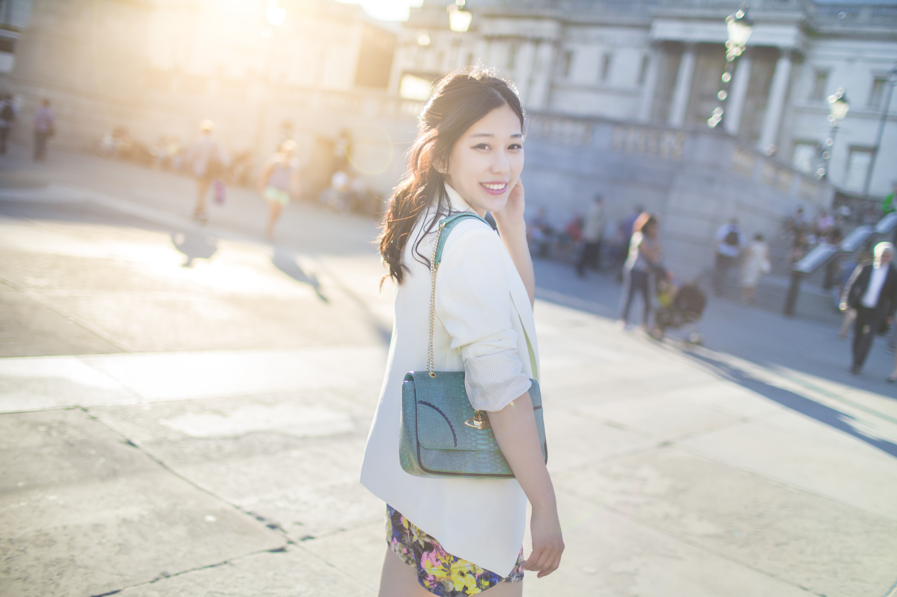
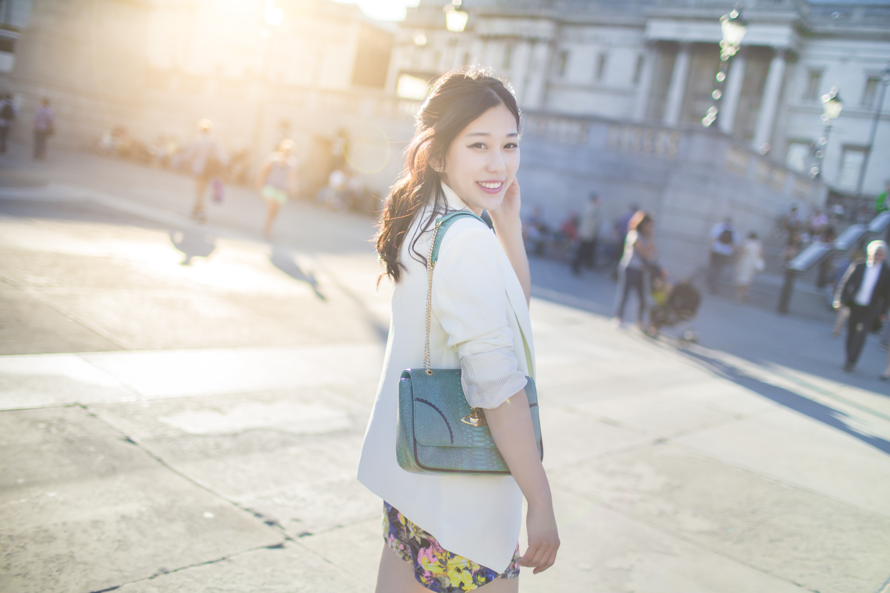
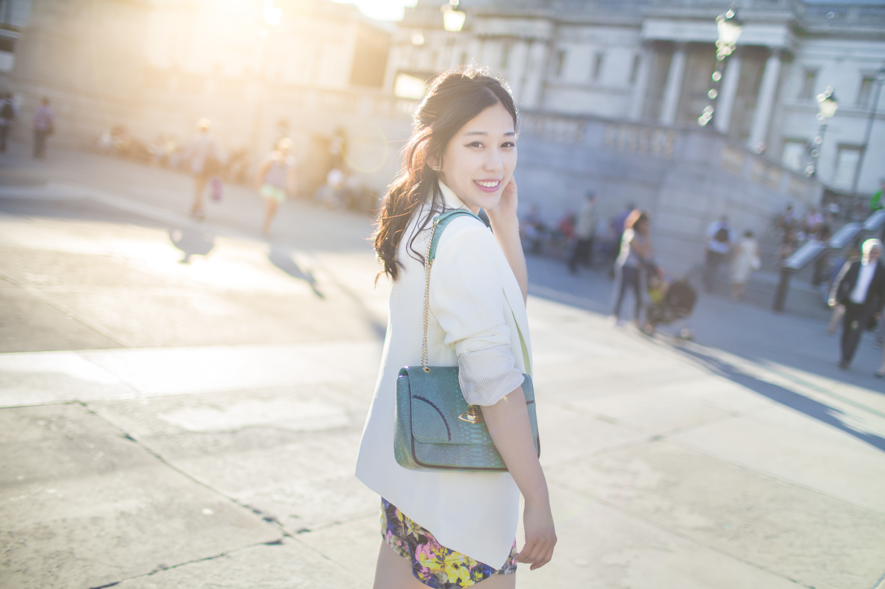
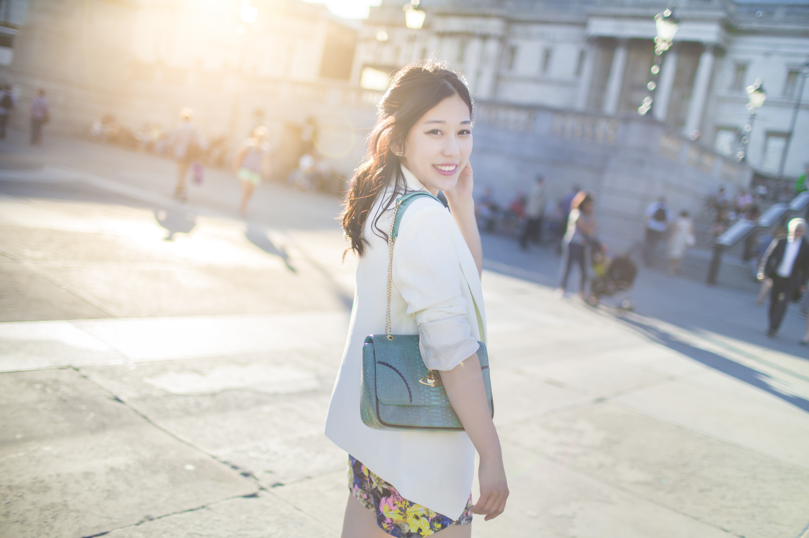
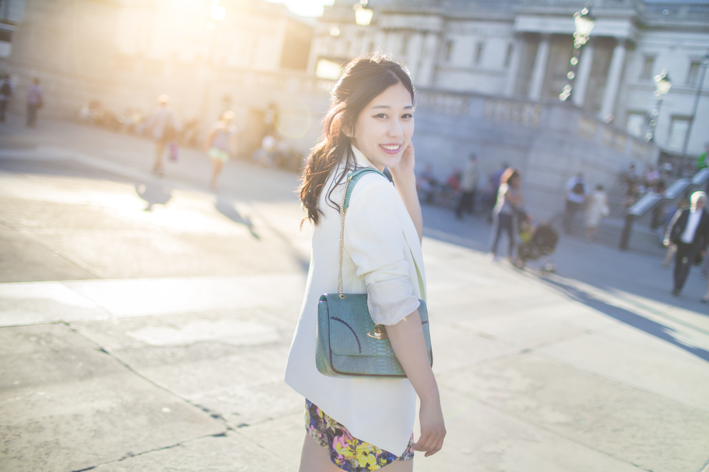

名字:
林花仔
性别:女
介绍:职业生活家/业余摄影师
问题
答案
新建于:2014-11-20 01:28:03 PM，更新于2014-11-20 01:28:03 PM
正文:

这是一组之前拍的客照，是我觉得笑起来最好看的姑娘~
1.边玩边拍，情绪到了就笑得出来
2.相机随时开机状态，抓拍
3.用眼睛笑，如果觉得困难，让拍摄对象在你按下快门的那一刻小吸一口气。
4.说什么想想开心的事情这件事最没用，又不是演员，只有当下的开心才能最及时的显露在脸上。
 

 这是一组之前拍的客照，是我觉得笑起来最好看的姑娘~这是一组之前拍的客照，是我觉得笑起来最好看的姑娘~
这是一组之前拍的客照，是我觉得笑起来最好看的姑娘~这是一组之前拍的客照，是我觉得笑起来最好看的姑娘~